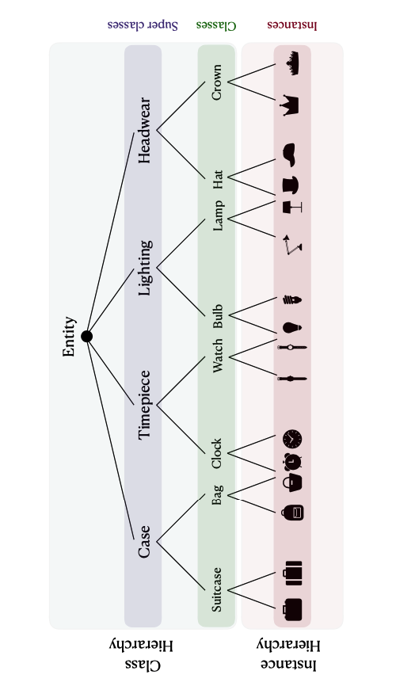

|
Email / CV / LinkedIn / Google Scholar / Twitter / Github I am a PhD student at the University of Amsterdam, where I work on Hierarchical Knowledge in Multimodal Representation Learning. My research is jointly supervised by Prof. Dr. Paul Groth (INDE Lab) and Dr. Pascal Mettes (VIS Lab). During my PhD, I completed a research internship at Apple Machine Learning Research, where I collaborated with Hanlin Goh on self-supervised pretraining of transformers using relative patch transformations. Prior to my PhD, I earned a Master’s degree in Artificial Intelligence from the University of Amsterdam. During this time, I interned at Dexter Energy Services weather nowcasting using satellite imagey. My master’s thesis, conducted in collaboration with TomTom, focused on object detection under high class imbalance. I hold a Bachelor’s degree in Computer Science with a focus on Information Technology from the University of Tehran. During my undergraduate studies, I completed a research internship at ETH Zurich at the Computational Social Science Lab, where I worked on large-scale distributed systems (DIAS & EPOS) with an emphasis on data management. |

|
|
I'm interested in computer vision, and specifically multimodal data such as video, audio, text and graph. I would like to work on improving high-level understanding of videos such as object-centric learning and relationship detection and easing retrieval by storing information in a knowledge graph. I'm currenlty working on a project to learn better instance-level represetations using prior knowledge. |
Designing Hierarchies for Optimal Hyperbolic EmbeddingMelika Ayoughi, Max van Spengler, Pascal Mettes and Paul Groth Published at ESWC2025 conference, 2025 paper / code / Hyperbolic geometry has shown to be highly effective for embedding hierarchical data structures. As such, machine learning in hyperbolic space is rapidly gaining traction across a wide range of disciplines, from recommender systems and graph networks to biological systems and computer vision. The performance of hyperbolic learning commonly depends on the hierarchical information used as input or supervision. Given that knowledge graphs and ontologies are common sources of such hierarchies, this paper aims to guide ontology designers in designing hierarchies for use in these learning algorithms. Using widely employed measures of embedding quality with extensive experiments, we find that hierarchies are best suited for hyperbolic embeddings when they are wide, and single inheritance, independent of the hierarchy size and imbalance. |
|  |
Continual Hyperbolic Learning of Instances and ClassesUnder review, 2024 Instance-level continual learning addresses the challenging problem of recognizing and remembering specific instances of object classes in an incremental setup, where new instances appear over time. Continual learning of instances forms a more fine-grained challenge than conventional continual learning, which is only concerned with incremental discrimination at the class-level. In this paper, we argue that for real-world continual understanding, we need to recognize samples both at the instance- and class-level. We find that classes and instances form a hierarchical structure. To enable us to learn from this structure, we propose a hyperbolic continual learning algorithm for visual instances and classes. We introduce continual hyperbolic classification and distillation, allowing us to embed the hierarchical relations between classes and from classes to instances. Empirical evaluations show that our method can operate effectively at both levels of granularity and with better hierarchical generalization, outperforming well-known continual learning algorithms. |
PART: Self-supervised Pretraining with Pairwise Relative TranslationsUnder review, 2024 Preprint / code / Images are often composed of objects and object parts that are related to each other but are not necessarily related to their absolute position in the image frame. For instance, the pose of a person's nose is consistent relative to the forehead, while that same nose can be anywhere in absolute position in the image frame. To capture these underlying relative relationships, we introduce PART, a novel pretraining approach that predicts pairwise relative translations between randomly sampled input patches. Through this process, the original patch positions are masked out. The pretraining objective is to predict the pairwise translation parameters for any set of patches, just using the patch content. Our object detection experiments on COCO show improved performance over strong baselines such as MAE and DropPos. Our method is competitive on the ImageNet-1k classification benchmark. Beyond vision, we also outperform baselines on 1D time series prediction tasks. The code and models will be available soon. |
Self-Contained Entity Discovery from Captioned VideosMelika Ayoughi , Pascal Mettes, Paul Groth Published at TOMM journal, 2022 paper / arxiv / code / slides / This paper introduces the task of visual named entity discovery in videos without the need for task-specific supervision or task-specific external knowledge sources. Assigning specific names to entities (e.g. faces, scenes, or objects) in video frames is a long-standing challenge. Commonly, this problem is addressed as a supervised learning objective by manually annotating faces with entity labels. To bypass the annotation burden of this setup, several works have investigated the problem by utilizing external knowledge sources such as movie databases. While effective, such approaches do not work when task-specific knowledge sources are not provided and can only be applied to movies and TV series. In this work, we take the problem a step further and propose to discover entities in videos from videos and corresponding captions or subtitles. We introduce a three-stage method where we (i) create bipartite entity-name graphs from frame-caption pairs, (ii) find visual entity agreements, and (iii) refine the entity assignment through entity-level prototype construction. To tackle this new problem, we outline two new benchmarks SC-Friends and SC-BBT based on the Friends and Big Bang Theory TV series. Experiments on the benchmarks demonstrate the ability of our approach to discover which named entity belongs to which face or scene, with an accuracy close to a supervised oracle, just from the multimodal information present in videos. Additionally, our qualitative examples show the potential challenges of self-contained discovery of any visual entity for future work. |
|
|
| October 2020-Now: Mentor at the inclusive AI program |
| October 2020-July 2023: Organization team of the inclusive AI program |
|
|
| May 2025: Presented our work at the Netherlands Conference on Computer Vision |
| April 2025: Our paper on "Designing Hierarchies for Optimal Hyperbolic Embedding" got accepted at ESWC 2025 conference. |
| October 2024: Presented our work on “Hyperbolic continual learning of instances and classes” at the Instance-level recognition workshop at ECCV2024. |
| October 2024: Presented our work on “Self-supervised Pretraining with Pairwise Relative Translations” at the "Self Supervised Learning: What is Next?" workshop at ECCV2024. |
| May 2024: Presented our work at the Netherlands Conference on Computer Vision |
| August 2023: Joined Apple MLR for a 4-month research internship. |
| January 2023: Our paper on "Self-Contained Entity Discovery from Captioned Videos" got accepted at TOMM journal |
| November 2022: Presented our work at the WiML at Neurips 2022 |
| July 2022: Presented our work at the Vision and Sports Summer School |
| May 2022: Presented our work at the Netherlands Conference on Computer Vision |
|
|
| Nov 2024: Master AI Thesis Supervision |
| Nov 2023: Master AI Thesis Supervision |
| Nov 2022: Master IS(DS) Thesis Supervision |
| April 2022: Bachelor AI Thesis Supervision |
| November 2022: Teaching Assistant Applied Machine Learning at UvA |
| November 2021: Teaching Assistant Applied Machine Learning at UvA |
| November 2020: Teaching Assistant Applied Machine Learning at UvA |
| September 2019: Teaching Assistant Machine Learning 1 at UvA |
| 2014-2017: Teaching Assistant of Discrete Mathematics, Introduction to Computing Systems and Programming, Data Structures, Artificial Intelligence, Algorithm Design and Computer Networks at UT |